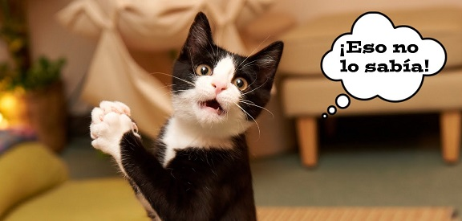

1.El rango de visión de un gato no incluye la zona por debajo de su nariz.
2.Los gatos se saludan rosando sus narices
4.Los gatos tienen más huesos que los seres humanos, nos ganan por 24.
5.Cuando los gatos maúllan lo hacen para comunicarse con humanos y no con gatos.
6.Los gatos tienen 12 bigotes a cada lado de su rostro.
7.Al nacer, la gran mayoría de los gatos tienen los ojos azules, que cambian de color al crecer
8.En Inglaterra y Australia, los gatos negros representan buena suerte.
9.Los gatos son lo suficientemente inteligentes para aprender a utilizar el retrete. ¿No lo crees? Mira este video:
10.Las garras de las patas delanteras de un gato son más afiladas que las de sus patas traseras.
12.Los cerebros de un gato son más similares a los de un humano, que en el caso de los perros.
13.Un gato es capaz de emitir 100 sonidos diferentes, los perros sólo
14Un gato duerme 16 horas diarias en promedio.
15.Los gatos comen pasto para limpiar su sistema digestivo de cualquier pelusa que hayan tragado.
16.Un gato casero vive en promedio 16 años, mientras que uno callejero sólo entre 3 y 5 años
17.A los gatos les gusta su comida a temperatura ambiente
18.Se cree que el primer ancestro del gato vivió hace 30 millones de años
19.En el antiguo Egipto, los gatos eran adorados. Asimismo, el rapto y venta de gatos podía ser castigado con la muerte.
20.Los gatos, con el paso de los años, se vuelven intolerantes a la lactosa.
